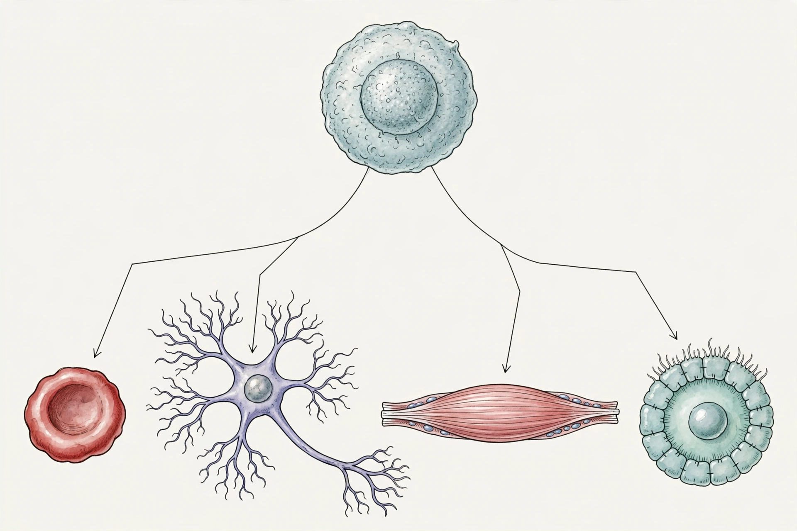

Cellular differentiationCellular differentiation is the process in which a stem cell changes from one type to a more specialised type, involving changes in gene expression. It allows a single fertilised egg to develop into the hundreds of distinct cell types of a multicellular organism — neurons, muscle cells, blood cells, epithelial cells and so on.
Cells are classified by potency: totipotent (zygote; can form a whole organism), pluripotent (embryonic stem cells; most cell types), multipotent (e.g. haematopoietic stem cells) and unipotent. During development, potency generally narrows as differentiation proceeds.
Differentiation is controlled by transcription factors, signalling pathways (Wnt, Notch, Hedgehog, TGF-β), morphogen gradients, and epigenetic modifications — DNA methylation and histone changes — that switch gene programmes on and off without altering the DNA sequence. Asymmetric division and environmental cues position cells to adopt particular fates.
John Gurdon's nuclear transfer experiments and Shinya Yamanaka's induced pluripotent stem cells (2006, using Oct4, Sox2, Klf4 and c-Myc — the "Yamanaka factors") showed differentiation is reversible, earning them the 2012 Nobel Prize and opening regenerative medicine.